Deeper dive on cross-L2 reading for wallets and other use cases
2023 Jun 20
See all posts
Deeper dive on cross-L2 reading for wallets and other use cases
Special thanks to Yoav Weiss, Dan Finlay, Martin Koppelmann, and
the Arbitrum, Optimism, Polygon, Scroll and SoulWallet teams for
feedback and review.
In this post on
the Three Transitions, I outlined some key reasons why it's valuable
to start thinking explicitly about L1 + cross-L2 support, wallet
security, and privacy as necessary basic features of the ecosystem
stack, rather than building each of these things as addons that can be
designed separately by individual wallets.
This post will focus more directly on the technical aspects
of one specific sub-problem: how to make it easier to read L1 from L2,
L2 from L1, or an L2 from another L2. Solving this problem is
crucial for implementing an asset / keystore separation architecture,
but it also has valuable use cases in other areas, most notably
optimizing reliable cross-L2 calls, including use cases like moving
assets between L1 and L2s.
Recommended pre-reads
Table of contents
What is the goal?
Once L2s become more mainstream, users will have assets across
multiple L2s, and possibly L1 as well. Once smart contract wallets
(multisig, social recovery or otherwise) become mainstream, the
keys needed to access some account are going to change over time, and
old keys would need to no longer be valid. Once both
of these things happen, a user will need to have a way to change the
keys that have authority to access many accounts which live in many
different places, without making an extremely high number of
transactions.
Particularly, we need a way to handle counterfactual
addresses: addresses that have not yet been "registered" in any way
on-chain, but which nevertheless need to receive and securely hold
funds. We all depend on counterfactual addresses: when you use
Ethereum for the first time, you are able to generate an ETH address
that someone can use to pay you, without "registering" the address
on-chain (which would require paying txfees, and hence already holding
some ETH).
With EOAs, all
addresses start off as counterfactual addresses. With smart contract
wallets, counterfactual addresses are still possible, largely thanks to
CREATE2, which
allows you to have an ETH address that can only be filled by a smart
contract that has code matching a particular hash.
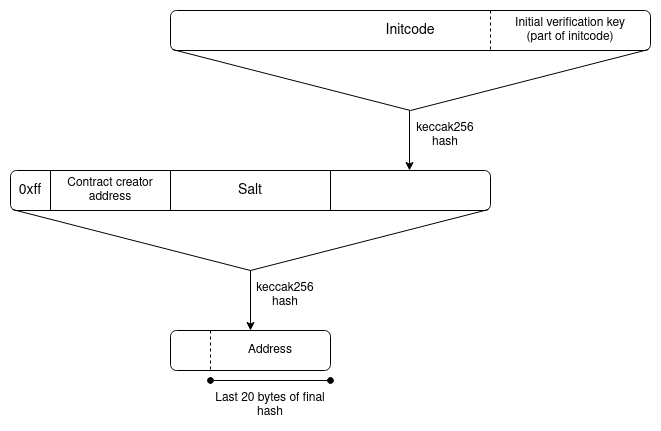
EIP-1014
(CREATE2) address calculation algorithm.
However, smart contract wallets introduce a new challenge: the
possibility of access keys changing. The address, which is a
hash of the initcode, can only contain the wallet's
initial verification key. The current verification key
would be stored in the wallet's storage, but that storage record does
not magically propagate to other L2s.
If a user has many addresses on many L2s, including addresses that
(because they are counterfactual) the L2 that they are on does not know
about, then it seems like there is only one way to allow users to change
their keys: asset / keystore separation architecture.
Each user has (i) a "keystore contract" (on L1 or on
one particular L2), which stores the verification key for all
wallets along with the rules for changing the key, and (ii)
"wallet contracts" on L1 and many L2s, which read cross-chain
to get the verification key.
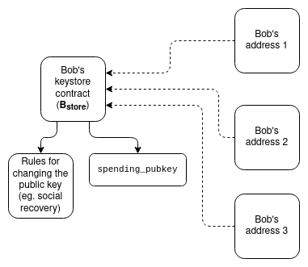
There are two ways to implement this:
- Light version (check only to update keys): each
wallet stores the verification key locally, and contains a function
which can be called to check a cross-chain proof of the keystore's
current state, and update its locally stored verification key to match.
When a wallet is used for the first time on a particular L2, calling
that function to obtain the current verification key from the keystore
is mandatory.
- Upside: uses cross-chain proofs sparingly, so it's
okay if cross-chain proofs are expensive. All funds are only spendable
with the current keys, so it's still secure.
- Downside: To change the verification key, you have
to make an on-chain key change in both the keystore and in every wallet
that is already initialized (though not counterfactual ones). This could
cost a lot of gas.
- Heavy version (check for every tx): a cross-chain
proof showing the key currently in the keystore is necessary for each
transaction.
- Upside: less systemic complexity, and
keystore updating is cheap.
- Downside: expensive per-tx, so requires much more
engineering to make cross-chain proofs acceptably cheap. Also not easily
compatible with ERC-4337, which currently does not support
cross-contract reading of mutable objects during validation.
What does a cross-chain
proof look like?
To show the full complexity, we'll explore the most difficult case:
where the keystore is on one L2, and the wallet is on a different L2. If
either the keystore or the wallet is on L1, then only half of this
design is needed.

Let's assume that the keystore is on Linea, and the wallet is on Kakarot. A full proof of the keys to
the wallet consists of:
- A proof proving the current Linea state root, given the current
Ethereum state root that Kakarot knows about
- A proof proving the current keys in the keystore, given the current
Linea state root
There are two primary tricky implementation questions here:
- What kind of proof do we use? (Is it Merkle proofs?
something else?)
- How does the L2 learn the recent L1 (Ethereum) state
root (or, as we shall see, potentially the full L1 state) in
the first place? And alternatively, how does the L1 learn the L2 state
root?
- In both cases, how long are the delays between
something happening on one side, and that thing being provable to the
other side?
What kinds of proof
schemes can we use?
There are five major options:
- Merkle proofs
- General-purpose ZK-SNARKs
- Special-purpose proofs (eg. with KZG)
- Verkle
proofs, which are somewhere between KZG and ZK-SNARKs on
both infrastructure workload and cost.
- No proofs and rely on direct state reading
In terms of infrastructure work required and cost for users, I rank
them roughly as follows:

"Aggregation" refers to the idea of aggregating all
the proofs supplied by users within each block into a big meta-proof
that combines all of them. This is possible for SNARKs, and for KZG, but
not for Merkle branches (you can combine
Merkle branches a little bit, but it only saves you
log(txs per block) / log(total number of keystores),
perhaps 15-30% in practice, so it's probably not worth the cost).
Aggregation only becomes worth it once the scheme has a substantial
number of users, so realistically it's okay for a version-1
implementation to leave aggregation out, and implement that for version
2.
How would Merkle proofs work?
This one is simple: follow the diagram in the previous
section directly. More precisely, each "proof" (assuming the
max-difficulty case of proving one L2 into another L2) would
contain:
- A Merkle branch proving the state-root of the
keystore-holding L2, given the most recent state root of
Ethereum that the L2 knows about. The keystore-holding L2's
state root is stored at a known storage slot of a known address (the
contract on L1 representing the L2), and so the path through the tree
could be hardcoded.
- A Merkle branch proving the current verification keys, given
the state-root of the keystore-holding L2. Here once again, the
verification key is stored at a known storage slot of a known address,
so the path can be hardcoded.
Unfortunately, Ethereum state proofs are complicated, but there exist
libraries
for verifying them, and if you use these libraries, this mechanism
is not too complicated to implement.
The larger problem is cost. Merkle proofs are long, and Patricia
trees are unfortunately ~3.9x longer than necessary (precisely: an ideal
Merkle proof into a tree holding N objects is
32 * log2(N) bytes long, and because Ethereum's Patricia
trees have 16 leaves per child, proofs for those trees are
32 * 15 * log16(N) ~= 125 * log2(N) bytes long). In a state
with roughly 250
million (~2²⁸) accounts, this makes each proof
125 * 28 = 3500 bytes, or about 56,000 gas, plus extra
costs for decoding and verifying hashes.
Two proofs together would end up costing around 100,000 to 150,000
gas (not including signature verification if this is used
per-transaction) - significantly more than the current base 21,000 gas
per transaction. But the disparity gets worse if the proof is
being verified on L2. Computation inside an L2 is cheap,
because computation is done off-chain and in an ecosystem with much
fewer nodes than L1. Data, on the other hand, has to be posted to L1.
Hence, the comparison is not 21000 gas vs 150,000 gas; it's 21,000 L2
gas vs 100,000 L1 gas.
We can calculate what this means by looking at comparisons between L1
gas costs and L2 gas costs:
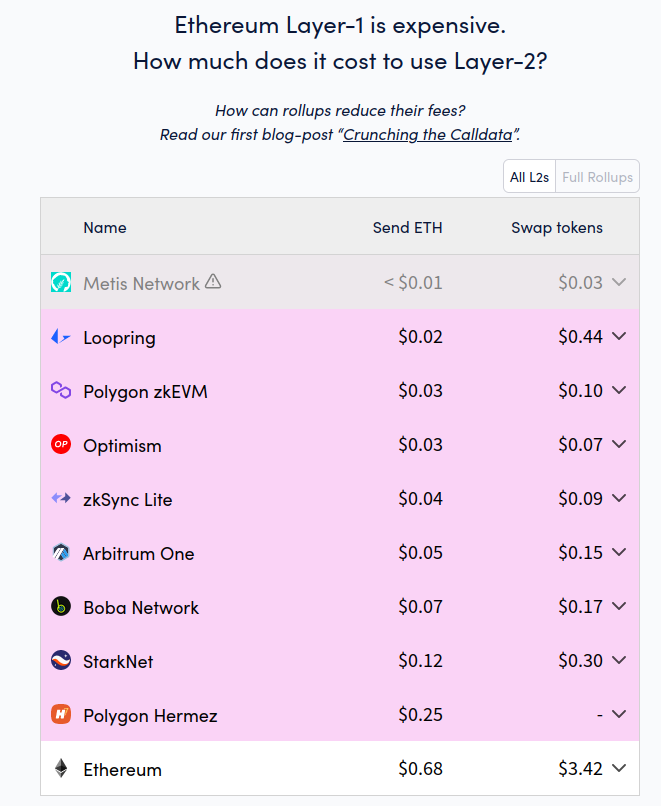
L1 is currently about 15-25x more expensive than L2 for simple sends,
and 20-50x more expensive for token swaps. Simple sends are relatively
data-heavy, but swaps are much more computationally heavy. Hence, swaps
are a better benchmark to approximate cost of L1 computation vs L2
computation. Taking all this into account, if we assume a 30x cost ratio
between L1 computation cost and L2 computation cost, this seems to imply
that putting a Merkle proof on L2 will cost the equivalent of perhaps
fifty regular transactions.
Of course, using a binary Merkle tree can cut costs by ~4x, but even
still, the cost is in most cases going to be too high - and if we're
willing to make the sacrifice of no longer being compatible with
Ethereum's current hexary state tree, we might as well seek even better
options.
How would ZK-SNARK proofs
work?
Conceptually, the use of ZK-SNARKs is also easy to understand: you
simply replace the Merkle proofs in the diagram
above with a ZK-SNARK proving that those Merkle proofs exist. A
ZK-SNARK costs ~400,000 gas of computation, and about 400 bytes
(compare: 21,000 gas and 100 bytes for a basic transaction, in the
future reducible
to ~25 bytes with compression). Hence, from a computational
perspective, a ZK-SNARK costs 19x the cost of a basic transaction today,
and from a data perspective, a ZK-SNARK costs 4x as much as a
basic transaction today, and 16x what a basic transaction may cost in
the future.
These numbers are a massive improvement over Merkle proofs, but they
are still quite expensive. There are two ways to improve on this: (i)
special-purpose KZG proofs, or (ii) aggregation, similar to ERC-4337
aggregation but using more fancy math. We can look into both.
How would
special-purpose KZG proofs work?
Warning, this section is much more mathy than other sections.
This is because we're going beyond general-purpose tools and building
something special-purpose to be cheaper, so we have to go "under the
hood" a lot more. If you don't like deep math, skip straight to the next section.
First, a recap of how KZG commitments work:
- We can represent a set of data
[D_1 ... D_n] with a KZG
proof of a polynomial derived from the data: specifically, the
polynomial P where P(w) = D_1,
P(w²) = D_2 ... P(wⁿ) = D_n. w here
is a "root of unity", a value where wᴺ = 1 for some
evaluation domain size N (this is all done in a finite
field).
- To "commit" to
P, we create an elliptic curve point
com(P) = P₀ * G + P₁ * S₁ + ... + Pₖ * Sₖ. Here:
G is the generator point of the curvePᵢ is the i'th-degree coefficient of the polynomial
PSᵢ is the i'th point in the trusted setup
- To prove
P(z) = a, we create a quotient
polynomial Q = (P - a) / (X - z), and create a
commitment com(Q) to it. It is only possible to create such
a polynomial if P(z) actually equals a.
- To verify a proof, we check the equation
Q * (X - z) = P - a by doing an elliptic curve check on the
proof com(Q) and the polynomial commitment
com(P): we check
e(com(Q), com(X - z)) ?= e(com(P) - com(a), com(1))
Some key properties that are important to understand are:
- A proof is just the
com(Q) value, which is 48
bytes
com(P₁) + com(P₂) = com(P₁ + P₂)- This also means that you can "edit" a value into an existing a
commitment. Suppose that we know that
D_i is currently
a, we want to set it to b, and the existing
commitment to D is com(P). A commitment to "P,
but with P(wⁱ) = b, and no other evaluations changed", then
we set com(new_P) = com(P) + (b-a) * com(Lᵢ), where
Lᵢ is a the "Lagrange polynomial" that equals
1 at wⁱ and 0 at other wʲ
points.
- To perform these updates efficiently, all
N commitments
to Lagrange polynomials (com(Lᵢ)) can be pre-calculated and
stored by each client. Inside a contract on-chain it may be too
much to store all N commitments, so instead you could make
a KZG commitment to the set of com(L_i) (or
hash(com(L_i)) values, so whenever someone needs to
update the tree on-chain they can simply provide the appropriate
com(L_i) with a proof of its correctness.
Hence, we have a structure where we can just keep adding values to
the end of an ever-growing list, though with a certain size limit
(realistically, hundreds of millions could be viable). We then use
that as our data structure to manage (i) a commitment to the
list of keys on each L2, stored on that L2 and mirrored to L1, and (ii)
a commitment to the list of L2 key-commitments, stored on the Ethereum
L1 and mirrored to each L2.
Keeping the commitments updated could either become part of core L2
logic, or it could be implemented without L2 core-protocol changes
through deposit and withdraw bridges.
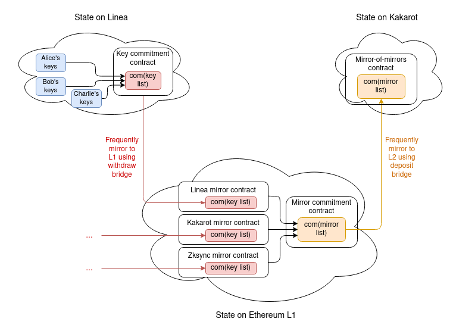
A full proof would thus require:
- The latest
com(key list) on the keystore-holding L2 (48
bytes)
- KZG proof of
com(key list) being a value inside
com(mirror_list), the commitment to the list of all key
list comitments (48 bytes)
- KZG proof of your key in
com(key list) (48 bytes, plus
4 bytes for the index)
It's actually possible to merge the two KZG proofs into one, so we
get a total size of only 100 bytes.
Note one subtlety: because the key list is a list, and not a
key/value map like the state is, the key list will have to assign
positions sequentially. The key commitment contract would contain its
own internal registry mapping each keystore to an ID, and for each key
it would store hash(key, address of the keystore) instead
of just key, to unambiguously communicate to other L2s
which keystore a particular entry is talking about.
The upside of this technique is that it performs very well on
L2. The data is 100 bytes, ~4x shorter than a ZK-SNARK and waaaay
shorter than a Merkle proof. The computation cost is largely one size-2
pairing check, or about 119,000 gas. On
L1, data is less important than computation, and so unfortunately KZG is
somewhat more expensive than Merkle proofs.
How would Verkle trees work?
Verkle trees essentially involve stacking KZG commitments (or IPA
commitments, which can be more efficient and use simpler
cryptography) on top of each other: to store 2⁴⁸ values, you can make a
KZG commitment to a list of 2²⁴ values, each of which itself is a KZG
commitment to 2²⁴ values. Verkle trees are being strongly
considered for the Ethereum state tree, because Verkle trees can be
used to hold key-value maps and not just lists (basically, you can make
a size-2²⁵⁶ tree but start it empty, only filling in specific parts of
the tree once you actually need to fill them).
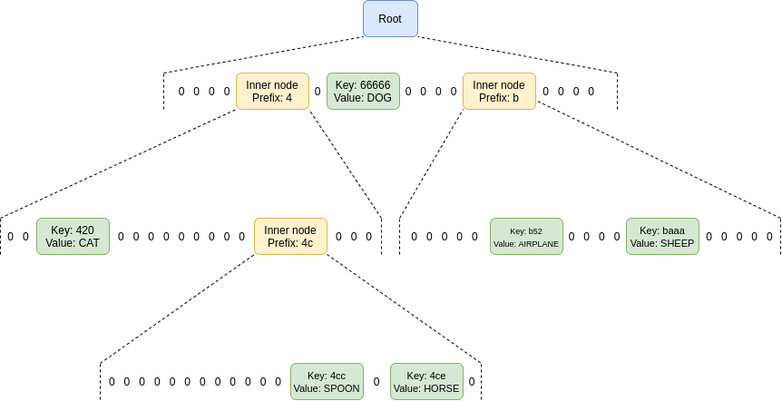
What a Verkle tree looks like. In practice, you might give each
node a width of 256 == 2⁸ for IPA-based trees, or 2²⁴ for KZG-based
trees.
Proofs in Verkle trees are somewhat longer than KZG; they might be a
few hundred bytes long. They are also difficult to verify, especially if
you try to aggregate many proofs into one.
Realistically, Verkle trees should be considered to be like Merkle
trees, but more viable without SNARKing (because of the lower data
costs), and cheaper with SNARKing (because of lower prover costs).
The largest advantage of Verkle trees is the possibility of
harmonizing data structures: Verkle proofs could be used directly over
L1 or L2 state, without overlay structures, and using the exact same
mechanism for L1 and L2. Once quantum computers become an
issue, or once proving Merkle branches becomes efficient enough, Verkle
trees could be replaced in-place with a binary hash tree with a suitable
SNARK-friendly hash function.
Aggregation
If N users make N transactions (or more realistically, N ERC-4337
UserOperations) that need to prove N cross-chain claims, we can save a
lot of gas by aggregating those proofs: the builder that would
be combining those transactions into a block or bundle that goes into a
block can create a single proof that proves all of those claims
simultaneously.
This could mean:
In all three cases, the proofs would only cost a few hundred thousand
gas each. The builder would need to make one of these on each
L2 for the users in that L2; hence, for this to be useful to build,
the scheme as a whole needs to have enough usage that there are very
often at least a few transactions within the same block on multiple
major L2s.
If ZK-SNARKs are used, the main marginal cost is simply "business
logic" of passing numbers around between contracts, so perhaps a few
thousand L2 gas per user. If KZG multi-proofs are used, the prover would
need to add 48 gas for each keystore-holding L2 that is used within that
block, so the marginal cost of the scheme per user would add another
~800 L1 gas per L2 (not per user) on top. But these costs are much lower
than the costs of not aggregating, which inevitably involve over 10,000
L1 gas and hundreds of thousands of L2 gas per user. For Verkle
trees, you can either use Verkle multi-proofs directly, adding around
100-200 bytes per user, or you can make a ZK-SNARK of a Verkle
multi-proof, which has similar costs to ZK-SNARKs of Merkle branches but
is significantly cheaper to prove.
From an implementation perspective, it's probably best to have
bundlers aggregate cross-chain proofs through the ERC-4337 account
abstraction standard. ERC-4337 already has a mechanism for builders to
aggregate parts of UserOperations in custom ways. There is even an implementation of this for
BLS signature aggregation, which could reduce gas costs on L2 by
1.5x to 3x depending on what
other forms of compression are included.
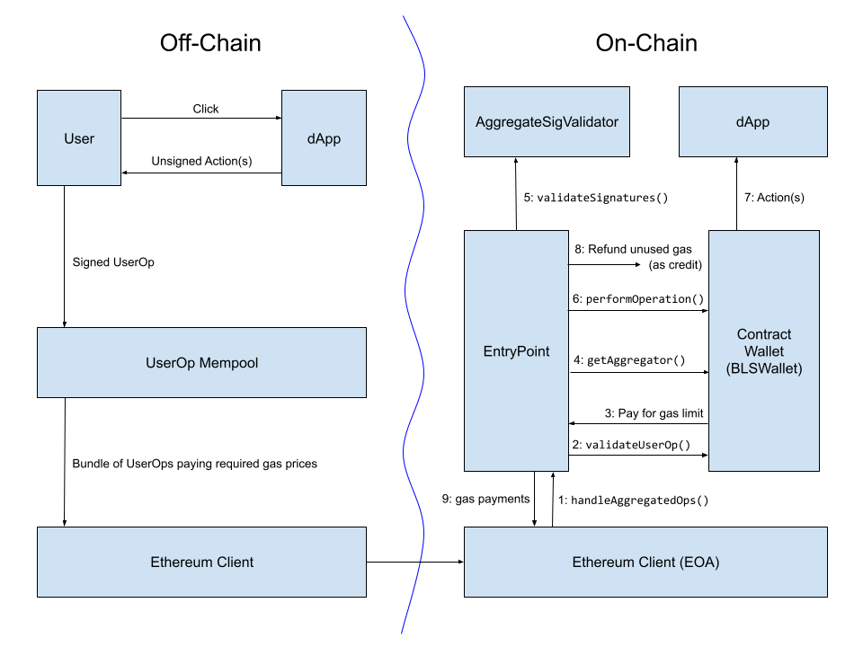
Diagram from a BLS wallet implementation
post showing the workflow of BLS aggregate signatures within an
earlier version of ERC-4337. The workflow of aggregating cross-chain
proofs will likely look very similar.
Direct state reading
A final possibility, and one only usable for L2 reading L1 (and not
L1 reading L2), is to modify L2s to let them make static calls
to contracts on L1 directly.
This could be done with an opcode or a precompile, which allows calls
into L1 where you provide the destination address, gas and calldata, and
it returns the output, though because these calls are static-calls they
cannot actually change any L1 state. L2s have to be aware of L1
already to process deposits, so there is nothing fundamental stopping
such a thing from being implemented; it is mainly a technical
implementation challenge (see: this
RFP from Optimism to support static calls into L1).
Notice that if the keystore is on L1, and L2s
integrate L1 static-call functionality, then no proofs are required at
all! However, if L2s don't integrate L1 static-calls, or if the
keystore is on L2 (which it may eventually have to be, once L1 gets too
expensive for users to use even a little bit), then proofs will be
required.
How does L2
learn the recent Ethereum state root?
All of the schemes above require the L2 to access either the recent
L1 state root, or the entire recent L1 state. Fortunately, all
L2s have some functionality to access the recent L1 state
already. This is because they need such a functionality to
process messages coming in from L1 to the L2, most notably deposits.
And indeed, if an L2 has a deposit feature, then you can use that L2
as-is to move L1 state roots into a contract on the L2: simply have a
contract on L1 call the BLOCKHASH opcode, and pass it to L2
as a deposit message. The full block header can be received, and its
state root extracted, on the L2 side. However, it would be much better
for every L2 to have an explicit way to access either the full recent L1
state, or recent L1 state roots, directly.
The main challenge with optimizing how L2s receive recent L1
state roots is simultaneously achieving safety and low
latency:
- If L2s implement "direct reading of L1" functionality in a lazy way,
only reading finalized L1 state roots, then the delay
will normally be 15 minutes, but in the
extreme case of inactivity leaks (which you have to tolerate),
the delay could be several weeks.
- L2s absolutely can be designed to read much more recent L1 state
roots, but because L1 can revert (even with single
slot finality, reverts can happen during inactivity leaks),
L2 would need to be able to revert as well. This is
technically challenging from a software engineering perspective, but at
least Optimism already has this capability.
- If you use the deposit bridge to bring L1 state
roots into L2, then simple economic viability might require a
long time between deposit updates: if the full cost of a
deposit is 100,000 gas, and we assume ETH is at $1800, and fees are at
200 gwei, and L1 roots are brought into L2 once per day, that
would be a cost of $36 per L2 per day, or $13148 per L2 per year to
maintain the system. With a delay of one hour, that goes up to $315,569
per L2 per year. In the best case, a constant trickle of impatient
wealthy users covers the updating fees and keep the system up to date
for everyone else. In the worst case, some altruistic actor would have
to pay for it themselves.
- "Oracles" (at least, the kind of tech that some defi people
call "oracles") are not an acceptable solution
here: wallet key management is a very security-critical
low-level functionality, and so it should depend on at most a few pieces
of very simple, cryptographically trustless low-level
infrastructure.
Additionally, in the opposite direction (L1s reading L2):
- On optimistic rollups, state roots take one week to reach
L1 because of the fraud proof delay. On ZK rollups it takes a
few hours for now because of a combination of proving times and economic
limits, though future technology will reduce this.
- Pre-confirmations (from sequencers, attesters, etc) are not
an acceptable solution for L1 reading L2. Wallet management is
a very security-critical low-level functionality, and so the level of
security of the L2 -> L1 communication must be absolute: it should
not even be possible to push a false L1 state root by taking over the L2
validator set. The only state roots the L1 should trust are state roots
that have been accepted as final by the L2's state-root-holding contract
on L1.
Some of these speeds for trustless cross-chain operations are
unacceptably slow for many defi use cases; for those cases, you do need
faster bridges with more imperfect security models. For the use case of
updating wallet keys, however, longer delays are more acceptable: you're
not delaying transactions by hours, you're delaying key
changes. You'll just have to keep the old keys around longer. If
you're changing keys because keys are stolen, then you do have a
significant period of vulnerability, but this can be mitigated, eg. by
wallets having a freeze function.
Ultimately, the best latency-minimizing solution is for L2s to
implement direct reading of L1 state roots in an optimal way, where each
L2 block (or the state root computation log) contains a pointer to the
most recent L1 block, so if L1 reverts, L2 can revert as well. Keystore
contracts should be placed either on mainnet, or on L2s that are
ZK-rollups and so can quickly commit to L1.
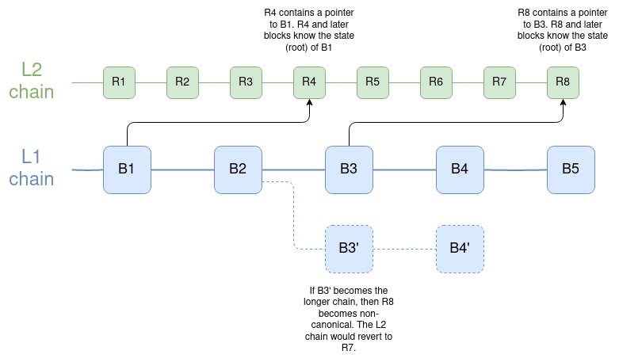
Blocks of the L2 chain can have dependencies on not just previous
L2 blocks, but also on an L1 block. If L1 reverts past such a link, the
L2 reverts too. It's worth noting that this is also how an earlier
(pre-Dank) version of sharding was envisioned to work; see here
for code.
How
much connection to Ethereum does another chain need to hold wallets
whose keystores are rooted on Ethereum or an L2?
Surprisingly, not that much. It actually does not even need to be a
rollup: if it's an L3, or a validium, then it's okay to hold wallets
there, as long as you hold keystores either on L1 or on a ZK rollup. The
thing that you do need is for the chain to have direct access
to Ethereum state roots, and a technical and social commitment
to be willing to reorg if Ethereum reorgs, and hard fork if Ethereum
hard forks.
One interesting research problem is identifying to what extent it is
possible for a chain to have this form of connection to
multiple other chains (eg. Ethereum and Zcash). Doing it
naively is possible: your chain could agree to reorg if Ethereum
or Zcash reorg (and hard fork if Ethereum or Zcash
hard fork), but then your node operators and your community more
generally have double the technical and political dependencies. Hence
such a technique could be used to connect to a few other chains, but at
increasing cost. Schemes based on ZK bridges have
attractive technical properties, but they have the key weakness that
they are not robust to 51% attacks or hard forks. There may be more
clever solutions.
Preserving privacy
Ideally, we also want to preserve privacy. If you have many wallets
that are managed by the same keystore, then we want to make sure:
- It's not publicly known that those wallets are all connected to each
other.
- Social recovery guardians don't learn what the addresses are that
they are guarding.
This creates a few issues:
- We cannot use Merkle proofs directly, because they do not preserve
privacy.
- If we use KZG or SNARKs, then the proof needs to provide a blinded
version of the verification key, without revealing the location of the
verification key.
- If we use aggregation, then the aggregator should not learn the
location in plaintext; rather, the aggregator should receive blinded
proofs, and have a way to aggregate those.
- We can't use the "light version" (use cross-chain proofs only to
update keys), because it creates a privacy leak: if many wallets get
updated at the same time due to an update procedure, the timing leaks
the information that those wallets are likely related. So we have to use
the "heavy version" (cross-chain proofs for each transaction).
With SNARKs, the solutions are conceptually easy: proofs are
information-hiding by default, and the aggregator needs to produce a
recursive SNARK to prove the SNARKs.

The main challenge of this approach today is that aggregation
requires the aggregator to create a recursive SNARK, which is currently
quite slow.
With KZG, we can use this
work on non-index-revealing KZG proofs (see also: a more formalized
version of that work in the Caulk paper) as a
starting point. Aggregation of blinded proofs, however, is an open
problem that requires more attention.
Directly reading L1 from inside L2, unfortunately, does not preserve
privacy, though implementing direct-reading functionality is still very
useful, both to minimize latency and because of its utility for other
applications.
Summary
- To have cross-chain social recovery wallets, the most realistic
workflow is a wallet that maintains a keystore in one
location, and wallets in many locations, where wallet
reads the keystore either (i) to update their local view of the
verification key, or (ii) during the process of verifying each
transaction.
- A key ingredient of making this possible is cross-chain
proofs. We need to optimize these proofs hard. Either
ZK-SNARKs, waiting for Verkle proofs,
or a custom-built KZG solution, seem like the best
options.
- In the longer term, aggregation protocols where
bundlers generate aggregate proofs as part of creating a bundle of all
the UserOperations that have been submitted by users will be necessary
to minimize costs. This should probably be integrated into the
ERC-4337 ecosystem, though changes to ERC-4337 will
likely be required.
- L2s should be optimized to minimize the latency of reading
L1 state (or at least the state root) from inside the L2. L2s
directly reading L1 state is ideal and can save on
proof space.
- Wallets can be not just on L2s; you can also put wallets on
systems with lower levels of connection to Ethereum (L3s, or
even separate chains that only agree to include Ethereum state roots and
reorg or hard fork when Ethereum reorgs or hardforks).
- However, keystores should be either on L1 or on
high-security ZK-rollup L2 . Being on L1 saves a lot of
complexity, though in the long run even that may be too expensive, hence
the need for keystores on L2.
- Preserving privacy will require additional work and
make some options more difficult. However, we should probably move
toward privacy-preserving solutions anyway, and at the least make sure
that anything we propose is forward-compatible with preserving
privacy.
Deeper dive on cross-L2 reading for wallets and other use cases
2023 Jun 20 See all postsSpecial thanks to Yoav Weiss, Dan Finlay, Martin Koppelmann, and the Arbitrum, Optimism, Polygon, Scroll and SoulWallet teams for feedback and review.
In this post on the Three Transitions, I outlined some key reasons why it's valuable to start thinking explicitly about L1 + cross-L2 support, wallet security, and privacy as necessary basic features of the ecosystem stack, rather than building each of these things as addons that can be designed separately by individual wallets.
This post will focus more directly on the technical aspects of one specific sub-problem: how to make it easier to read L1 from L2, L2 from L1, or an L2 from another L2. Solving this problem is crucial for implementing an asset / keystore separation architecture, but it also has valuable use cases in other areas, most notably optimizing reliable cross-L2 calls, including use cases like moving assets between L1 and L2s.
Recommended pre-reads
Table of contents
What is the goal?
Once L2s become more mainstream, users will have assets across multiple L2s, and possibly L1 as well. Once smart contract wallets (multisig, social recovery or otherwise) become mainstream, the keys needed to access some account are going to change over time, and old keys would need to no longer be valid. Once both of these things happen, a user will need to have a way to change the keys that have authority to access many accounts which live in many different places, without making an extremely high number of transactions.
Particularly, we need a way to handle counterfactual addresses: addresses that have not yet been "registered" in any way on-chain, but which nevertheless need to receive and securely hold funds. We all depend on counterfactual addresses: when you use Ethereum for the first time, you are able to generate an ETH address that someone can use to pay you, without "registering" the address on-chain (which would require paying txfees, and hence already holding some ETH).
With EOAs, all addresses start off as counterfactual addresses. With smart contract wallets, counterfactual addresses are still possible, largely thanks to CREATE2, which allows you to have an ETH address that can only be filled by a smart contract that has code matching a particular hash.
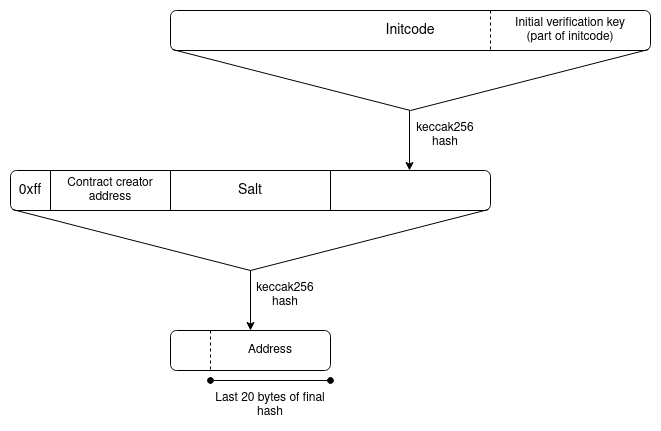
EIP-1014 (CREATE2) address calculation algorithm.
However, smart contract wallets introduce a new challenge: the possibility of access keys changing. The address, which is a hash of the
initcode, can only contain the wallet's initial verification key. The current verification key would be stored in the wallet's storage, but that storage record does not magically propagate to other L2s.If a user has many addresses on many L2s, including addresses that (because they are counterfactual) the L2 that they are on does not know about, then it seems like there is only one way to allow users to change their keys: asset / keystore separation architecture. Each user has (i) a "keystore contract" (on L1 or on one particular L2), which stores the verification key for all wallets along with the rules for changing the key, and (ii) "wallet contracts" on L1 and many L2s, which read cross-chain to get the verification key.
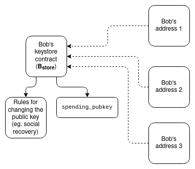
There are two ways to implement this:
What does a cross-chain proof look like?
To show the full complexity, we'll explore the most difficult case: where the keystore is on one L2, and the wallet is on a different L2. If either the keystore or the wallet is on L1, then only half of this design is needed.
Let's assume that the keystore is on Linea, and the wallet is on Kakarot. A full proof of the keys to the wallet consists of:
There are two primary tricky implementation questions here:
What kinds of proof schemes can we use?
There are five major options:
In terms of infrastructure work required and cost for users, I rank them roughly as follows:
"Aggregation" refers to the idea of aggregating all the proofs supplied by users within each block into a big meta-proof that combines all of them. This is possible for SNARKs, and for KZG, but not for Merkle branches (you can combine Merkle branches a little bit, but it only saves you
log(txs per block) / log(total number of keystores), perhaps 15-30% in practice, so it's probably not worth the cost).Aggregation only becomes worth it once the scheme has a substantial number of users, so realistically it's okay for a version-1 implementation to leave aggregation out, and implement that for version 2.
How would Merkle proofs work?
This one is simple: follow the diagram in the previous section directly. More precisely, each "proof" (assuming the max-difficulty case of proving one L2 into another L2) would contain:
Unfortunately, Ethereum state proofs are complicated, but there exist libraries for verifying them, and if you use these libraries, this mechanism is not too complicated to implement.
The larger problem is cost. Merkle proofs are long, and Patricia trees are unfortunately ~3.9x longer than necessary (precisely: an ideal Merkle proof into a tree holding
Nobjects is32 * log2(N)bytes long, and because Ethereum's Patricia trees have 16 leaves per child, proofs for those trees are32 * 15 * log16(N) ~= 125 * log2(N)bytes long). In a state with roughly 250 million (~2²⁸) accounts, this makes each proof125 * 28 = 3500bytes, or about 56,000 gas, plus extra costs for decoding and verifying hashes.Two proofs together would end up costing around 100,000 to 150,000 gas (not including signature verification if this is used per-transaction) - significantly more than the current base 21,000 gas per transaction. But the disparity gets worse if the proof is being verified on L2. Computation inside an L2 is cheap, because computation is done off-chain and in an ecosystem with much fewer nodes than L1. Data, on the other hand, has to be posted to L1. Hence, the comparison is not 21000 gas vs 150,000 gas; it's 21,000 L2 gas vs 100,000 L1 gas.
We can calculate what this means by looking at comparisons between L1 gas costs and L2 gas costs:
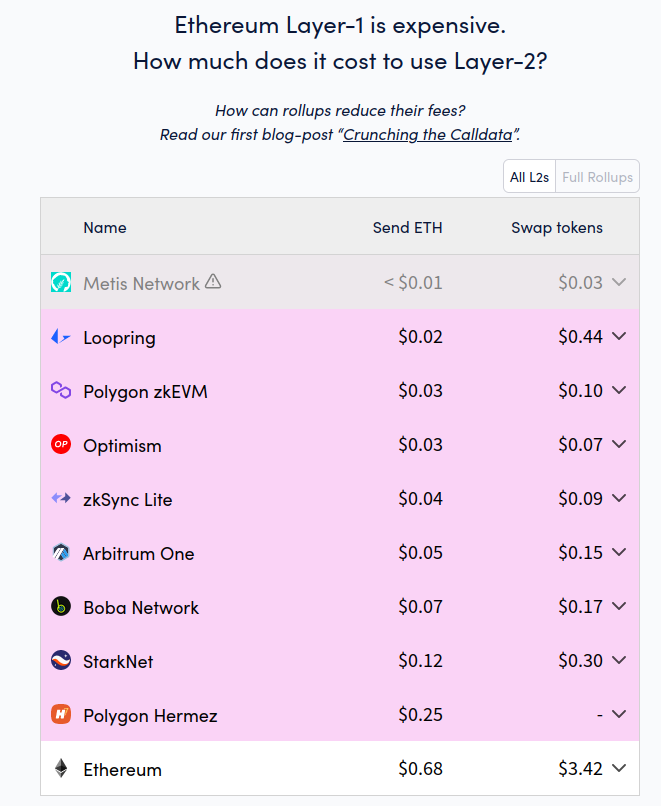
L1 is currently about 15-25x more expensive than L2 for simple sends, and 20-50x more expensive for token swaps. Simple sends are relatively data-heavy, but swaps are much more computationally heavy. Hence, swaps are a better benchmark to approximate cost of L1 computation vs L2 computation. Taking all this into account, if we assume a 30x cost ratio between L1 computation cost and L2 computation cost, this seems to imply that putting a Merkle proof on L2 will cost the equivalent of perhaps fifty regular transactions.
Of course, using a binary Merkle tree can cut costs by ~4x, but even still, the cost is in most cases going to be too high - and if we're willing to make the sacrifice of no longer being compatible with Ethereum's current hexary state tree, we might as well seek even better options.
How would ZK-SNARK proofs work?
Conceptually, the use of ZK-SNARKs is also easy to understand: you simply replace the Merkle proofs in the diagram above with a ZK-SNARK proving that those Merkle proofs exist. A ZK-SNARK costs ~400,000 gas of computation, and about 400 bytes (compare: 21,000 gas and 100 bytes for a basic transaction, in the future reducible to ~25 bytes with compression). Hence, from a computational perspective, a ZK-SNARK costs 19x the cost of a basic transaction today, and from a data perspective, a ZK-SNARK costs 4x as much as a basic transaction today, and 16x what a basic transaction may cost in the future.
These numbers are a massive improvement over Merkle proofs, but they are still quite expensive. There are two ways to improve on this: (i) special-purpose KZG proofs, or (ii) aggregation, similar to ERC-4337 aggregation but using more fancy math. We can look into both.
How would special-purpose KZG proofs work?
Warning, this section is much more mathy than other sections. This is because we're going beyond general-purpose tools and building something special-purpose to be cheaper, so we have to go "under the hood" a lot more. If you don't like deep math, skip straight to the next section.
First, a recap of how KZG commitments work:
[D_1 ... D_n]with a KZG proof of a polynomial derived from the data: specifically, the polynomialPwhereP(w) = D_1,P(w²) = D_2...P(wⁿ) = D_n.where is a "root of unity", a value wherewᴺ = 1for some evaluation domain sizeN(this is all done in a finite field).P, we create an elliptic curve pointcom(P) = P₀ * G + P₁ * S₁ + ... + Pₖ * Sₖ. Here:Gis the generator point of the curvePᵢis the i'th-degree coefficient of the polynomialPSᵢis the i'th point in the trusted setupP(z) = a, we create a quotient polynomialQ = (P - a) / (X - z), and create a commitmentcom(Q)to it. It is only possible to create such a polynomial ifP(z)actually equalsa.Q * (X - z) = P - aby doing an elliptic curve check on the proofcom(Q)and the polynomial commitmentcom(P): we checke(com(Q), com(X - z)) ?= e(com(P) - com(a), com(1))Some key properties that are important to understand are:
com(Q)value, which is 48 bytescom(P₁) + com(P₂) = com(P₁ + P₂)D_iis currentlya, we want to set it tob, and the existing commitment toDiscom(P). A commitment to "P, but withP(wⁱ) = b, and no other evaluations changed", then we setcom(new_P) = com(P) + (b-a) * com(Lᵢ), whereLᵢis a the "Lagrange polynomial" that equals1atwⁱand 0 at otherwʲpoints.Ncommitments to Lagrange polynomials (com(Lᵢ)) can be pre-calculated and stored by each client. Inside a contract on-chain it may be too much to store allNcommitments, so instead you could make a KZG commitment to the set ofcom(L_i)(orhash(com(L_i)) values, so whenever someone needs to update the tree on-chain they can simply provide the appropriatecom(L_i)with a proof of its correctness.Hence, we have a structure where we can just keep adding values to the end of an ever-growing list, though with a certain size limit (realistically, hundreds of millions could be viable). We then use that as our data structure to manage (i) a commitment to the list of keys on each L2, stored on that L2 and mirrored to L1, and (ii) a commitment to the list of L2 key-commitments, stored on the Ethereum L1 and mirrored to each L2.
Keeping the commitments updated could either become part of core L2 logic, or it could be implemented without L2 core-protocol changes through deposit and withdraw bridges.
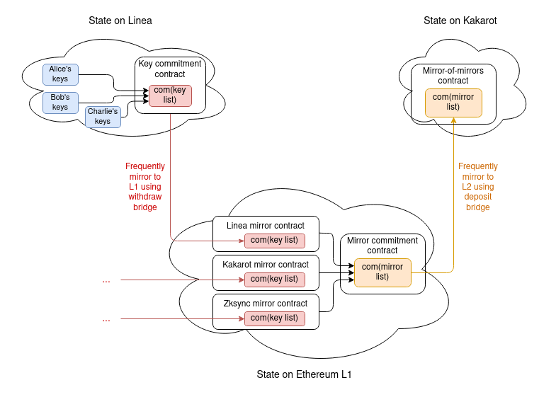
A full proof would thus require:
com(key list)on the keystore-holding L2 (48 bytes)com(key list)being a value insidecom(mirror_list), the commitment to the list of all key list comitments (48 bytes)com(key list)(48 bytes, plus 4 bytes for the index)It's actually possible to merge the two KZG proofs into one, so we get a total size of only 100 bytes.
Note one subtlety: because the key list is a list, and not a key/value map like the state is, the key list will have to assign positions sequentially. The key commitment contract would contain its own internal registry mapping each keystore to an ID, and for each key it would store
hash(key, address of the keystore)instead of justkey, to unambiguously communicate to other L2s which keystore a particular entry is talking about.The upside of this technique is that it performs very well on L2. The data is 100 bytes, ~4x shorter than a ZK-SNARK and waaaay shorter than a Merkle proof. The computation cost is largely one size-2 pairing check, or about 119,000 gas. On L1, data is less important than computation, and so unfortunately KZG is somewhat more expensive than Merkle proofs.
How would Verkle trees work?
Verkle trees essentially involve stacking KZG commitments (or IPA commitments, which can be more efficient and use simpler cryptography) on top of each other: to store 2⁴⁸ values, you can make a KZG commitment to a list of 2²⁴ values, each of which itself is a KZG commitment to 2²⁴ values. Verkle trees are being strongly considered for the Ethereum state tree, because Verkle trees can be used to hold key-value maps and not just lists (basically, you can make a size-2²⁵⁶ tree but start it empty, only filling in specific parts of the tree once you actually need to fill them).
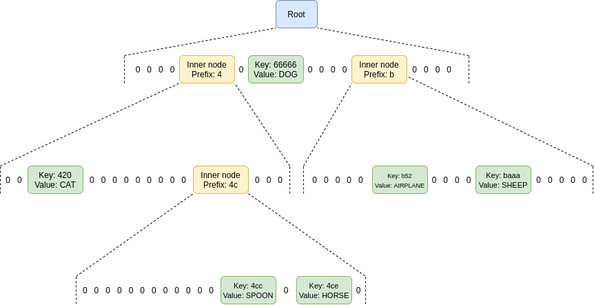
What a Verkle tree looks like. In practice, you might give each node a width of 256 == 2⁸ for IPA-based trees, or 2²⁴ for KZG-based trees.
Proofs in Verkle trees are somewhat longer than KZG; they might be a few hundred bytes long. They are also difficult to verify, especially if you try to aggregate many proofs into one.
Realistically, Verkle trees should be considered to be like Merkle trees, but more viable without SNARKing (because of the lower data costs), and cheaper with SNARKing (because of lower prover costs).
The largest advantage of Verkle trees is the possibility of harmonizing data structures: Verkle proofs could be used directly over L1 or L2 state, without overlay structures, and using the exact same mechanism for L1 and L2. Once quantum computers become an issue, or once proving Merkle branches becomes efficient enough, Verkle trees could be replaced in-place with a binary hash tree with a suitable SNARK-friendly hash function.
Aggregation
If N users make N transactions (or more realistically, N ERC-4337 UserOperations) that need to prove N cross-chain claims, we can save a lot of gas by aggregating those proofs: the builder that would be combining those transactions into a block or bundle that goes into a block can create a single proof that proves all of those claims simultaneously.
This could mean:
In all three cases, the proofs would only cost a few hundred thousand gas each. The builder would need to make one of these on each L2 for the users in that L2; hence, for this to be useful to build, the scheme as a whole needs to have enough usage that there are very often at least a few transactions within the same block on multiple major L2s.
If ZK-SNARKs are used, the main marginal cost is simply "business logic" of passing numbers around between contracts, so perhaps a few thousand L2 gas per user. If KZG multi-proofs are used, the prover would need to add 48 gas for each keystore-holding L2 that is used within that block, so the marginal cost of the scheme per user would add another ~800 L1 gas per L2 (not per user) on top. But these costs are much lower than the costs of not aggregating, which inevitably involve over 10,000 L1 gas and hundreds of thousands of L2 gas per user. For Verkle trees, you can either use Verkle multi-proofs directly, adding around 100-200 bytes per user, or you can make a ZK-SNARK of a Verkle multi-proof, which has similar costs to ZK-SNARKs of Merkle branches but is significantly cheaper to prove.
From an implementation perspective, it's probably best to have bundlers aggregate cross-chain proofs through the ERC-4337 account abstraction standard. ERC-4337 already has a mechanism for builders to aggregate parts of UserOperations in custom ways. There is even an implementation of this for BLS signature aggregation, which could reduce gas costs on L2 by 1.5x to 3x depending on what other forms of compression are included.
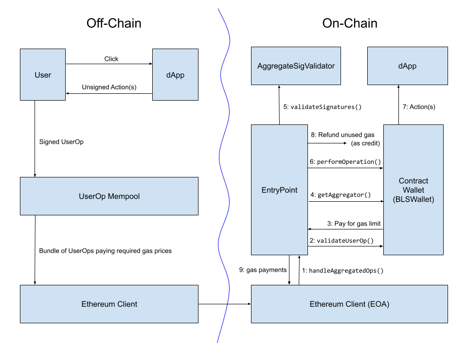
Diagram from a BLS wallet implementation post showing the workflow of BLS aggregate signatures within an earlier version of ERC-4337. The workflow of aggregating cross-chain proofs will likely look very similar.
Direct state reading
A final possibility, and one only usable for L2 reading L1 (and not L1 reading L2), is to modify L2s to let them make static calls to contracts on L1 directly.
This could be done with an opcode or a precompile, which allows calls into L1 where you provide the destination address, gas and calldata, and it returns the output, though because these calls are static-calls they cannot actually change any L1 state. L2s have to be aware of L1 already to process deposits, so there is nothing fundamental stopping such a thing from being implemented; it is mainly a technical implementation challenge (see: this RFP from Optimism to support static calls into L1).
Notice that if the keystore is on L1, and L2s integrate L1 static-call functionality, then no proofs are required at all! However, if L2s don't integrate L1 static-calls, or if the keystore is on L2 (which it may eventually have to be, once L1 gets too expensive for users to use even a little bit), then proofs will be required.
How does L2 learn the recent Ethereum state root?
All of the schemes above require the L2 to access either the recent L1 state root, or the entire recent L1 state. Fortunately, all L2s have some functionality to access the recent L1 state already. This is because they need such a functionality to process messages coming in from L1 to the L2, most notably deposits.
And indeed, if an L2 has a deposit feature, then you can use that L2 as-is to move L1 state roots into a contract on the L2: simply have a contract on L1 call the
BLOCKHASHopcode, and pass it to L2 as a deposit message. The full block header can be received, and its state root extracted, on the L2 side. However, it would be much better for every L2 to have an explicit way to access either the full recent L1 state, or recent L1 state roots, directly.The main challenge with optimizing how L2s receive recent L1 state roots is simultaneously achieving safety and low latency:
Additionally, in the opposite direction (L1s reading L2):
Some of these speeds for trustless cross-chain operations are unacceptably slow for many defi use cases; for those cases, you do need faster bridges with more imperfect security models. For the use case of updating wallet keys, however, longer delays are more acceptable: you're not delaying transactions by hours, you're delaying key changes. You'll just have to keep the old keys around longer. If you're changing keys because keys are stolen, then you do have a significant period of vulnerability, but this can be mitigated, eg. by wallets having a
freezefunction.Ultimately, the best latency-minimizing solution is for L2s to implement direct reading of L1 state roots in an optimal way, where each L2 block (or the state root computation log) contains a pointer to the most recent L1 block, so if L1 reverts, L2 can revert as well. Keystore contracts should be placed either on mainnet, or on L2s that are ZK-rollups and so can quickly commit to L1.
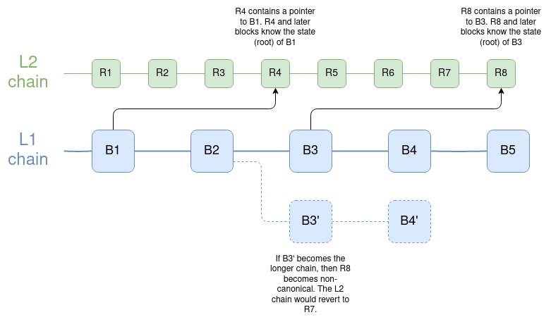
Blocks of the L2 chain can have dependencies on not just previous L2 blocks, but also on an L1 block. If L1 reverts past such a link, the L2 reverts too. It's worth noting that this is also how an earlier (pre-Dank) version of sharding was envisioned to work; see here for code.
How much connection to Ethereum does another chain need to hold wallets whose keystores are rooted on Ethereum or an L2?
Surprisingly, not that much. It actually does not even need to be a rollup: if it's an L3, or a validium, then it's okay to hold wallets there, as long as you hold keystores either on L1 or on a ZK rollup. The thing that you do need is for the chain to have direct access to Ethereum state roots, and a technical and social commitment to be willing to reorg if Ethereum reorgs, and hard fork if Ethereum hard forks.
One interesting research problem is identifying to what extent it is possible for a chain to have this form of connection to multiple other chains (eg. Ethereum and Zcash). Doing it naively is possible: your chain could agree to reorg if Ethereum or Zcash reorg (and hard fork if Ethereum or Zcash hard fork), but then your node operators and your community more generally have double the technical and political dependencies. Hence such a technique could be used to connect to a few other chains, but at increasing cost. Schemes based on ZK bridges have attractive technical properties, but they have the key weakness that they are not robust to 51% attacks or hard forks. There may be more clever solutions.
Preserving privacy
Ideally, we also want to preserve privacy. If you have many wallets that are managed by the same keystore, then we want to make sure:
This creates a few issues:
With SNARKs, the solutions are conceptually easy: proofs are information-hiding by default, and the aggregator needs to produce a recursive SNARK to prove the SNARKs.
The main challenge of this approach today is that aggregation requires the aggregator to create a recursive SNARK, which is currently quite slow.
With KZG, we can use this work on non-index-revealing KZG proofs (see also: a more formalized version of that work in the Caulk paper) as a starting point. Aggregation of blinded proofs, however, is an open problem that requires more attention.
Directly reading L1 from inside L2, unfortunately, does not preserve privacy, though implementing direct-reading functionality is still very useful, both to minimize latency and because of its utility for other applications.
Summary